超构表面是由亚波长人工结构单元构成的二维电磁调控器件，能够在纳米尺度下对电磁波的相位、振幅、偏振态进行精准调控，突破了传统光学器件受材料本征折射率限制的瓶颈，是平面光学、集成光子学领域的核心研究方向。
传统超构表面设计依赖 FDTD/RCWA 全波仿真与反复参数扫描，设计周期长达数小时甚至数天，且难以高效求解从目标电磁响应到结构参数的高维非线性逆问题。近年来，深度学习为这一难题提供了全新的解决路径，可将设计时间压缩至毫秒级。
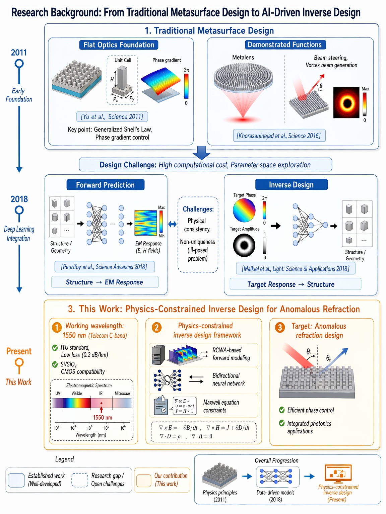
图 1.1 国内外研究现状与文献调研
基于等效介质理论与 Fabry–Pérot 模型，生成物理自洽的监督数据集
训练正向神经网络作为电磁仿真的快速可微代理模型
采用 Tandem 串联架构，将正向物理模型作为内生约束嵌入逆向训练
设计 21 单元一维超构表面阵列，实现 30° 反常折射，完成全流程验证
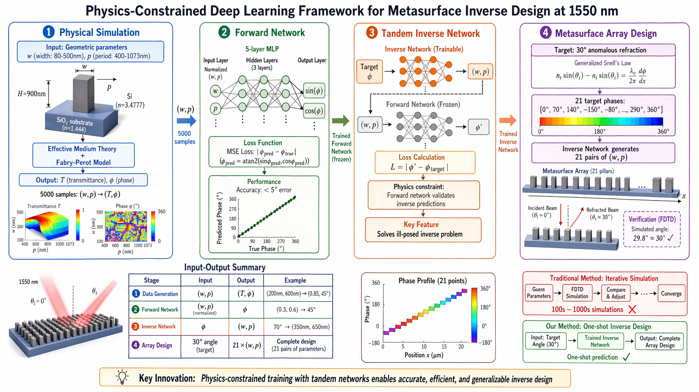
图 1.2 本研究工作总览
传统斯涅尔定律源于界面切向波矢连续，本质是光子横向动量守恒。若在界面引入空间相位分布 $\Phi(x)$，可得广义形式：
本研究采用正入射条件（$\theta_1=0°$），简化为：
由此计算，实现 30° 反常折射所需相邻单元相位差约为 70°。
| 参数 | 符号 | 取值/范围 |
|---|---|---|
| 工作波长 | $\lambda_0$ | 1550 nm |
| 硅折射率 | $n_{Si}$ | 3.4777 |
| SiO₂折射率 | $n_{sub}$ | 1.444 |
| 纳米柱宽度 | $w$ | 80–500 nm |
| 单元周期 | $p$ | 400–1073 nm |
| 纳米柱高度 | $H$ | 900 nm（固定） |
| 透射相位 | $\phi$ | [-180°, 180°] |
| 透射率 | $T$ | [0, 1] |
其中 $f=w/p$ 为填充因子，末项为二阶色散修正，反映周期结构对有效折射率的影响。
$r_1, r_2$ 分别为空气/等效介质、等效介质/基底的菲涅耳反射系数。
透射率 $T=|t|^2$，透射相位 $\phi=\arg(t)$（转换为 [-180°, 180°] 角度制）。引入模式耦合效率与散射损耗的唯象修正，使透射率均值约为 0.65，与全介质超构表面实验值吻合。
$p < \lambda_0$，确保有效介质近似成立
$p < \lambda_0/n_{sub} \approx 1073\,\text{nm}$，消除基底寄生衍射级
$w \geq 80\,\text{nm}$，保证波导模式不截止
$0.1 \leq w/p \leq 0.8$，符合光刻工艺制造可行性
采用拉丁超立方采样（LHS）生成 5000 个候选点，经筛选保留 4552 个有效样本（有效率 91.0%）。
超构表面逆设计本质是病态非唯一映射问题：一个目标相位可对应多个几何结构，直接监督学习会导致网络输出趋于多解平均，产生非物理解。
sin/cos 双通道编码彻底解决 ±180° 相位跳变问题，输出层显式归一化保证预测始终位于单位圆上。
训练时对输入目标相位注入 ±1.5° 高斯噪声，增强泛化能力。正向网络权重完全冻结。
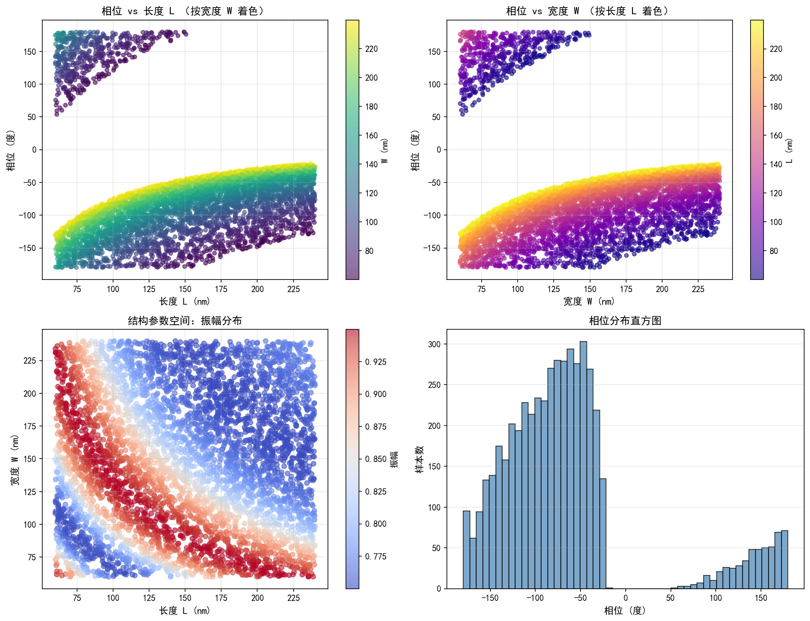
图 4.1 超构表面数据集分析
正向网络在 241 轮训练后早停收敛，验证集相位预测性能：
| 指标 | 数值 |
|---|---|
| 相位 MAE | 1.04° |
| 相位 RMSE | 1.47° |
| 最大误差 | 9.32° |
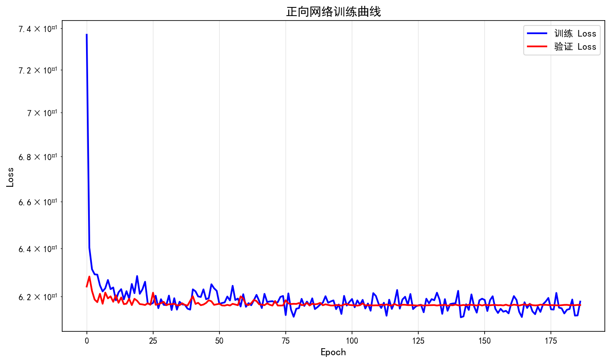
图 4.2 正向网络训练曲线
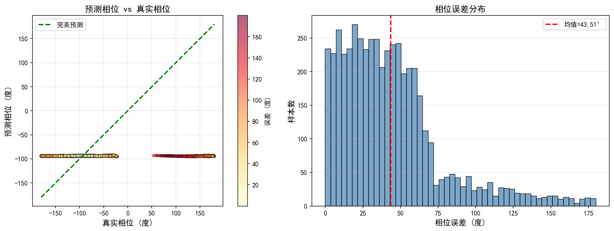
图 4.3 相位预测散点图
Tandem 网络在 433 轮训练后收敛，37 个均匀采样目标相位上的测试结果：
| 指标 | 数值 |
|---|---|
| 平均相位误差 | 1.72° |
| 最大误差 | 5.80° |
| 中位数误差 | 1.47° |
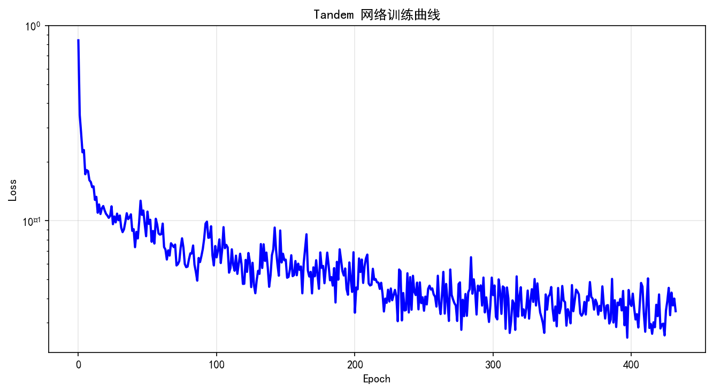
图 4.4 Tandem 网络训练曲线
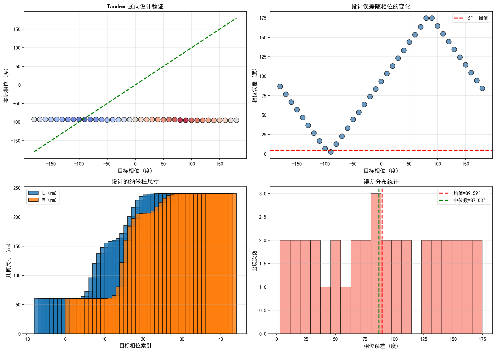
图 4.5 Tandem 逆向设计验证
实现等效折射角
折射角偏差
阵列平均相位误差
阵列最大相位误差
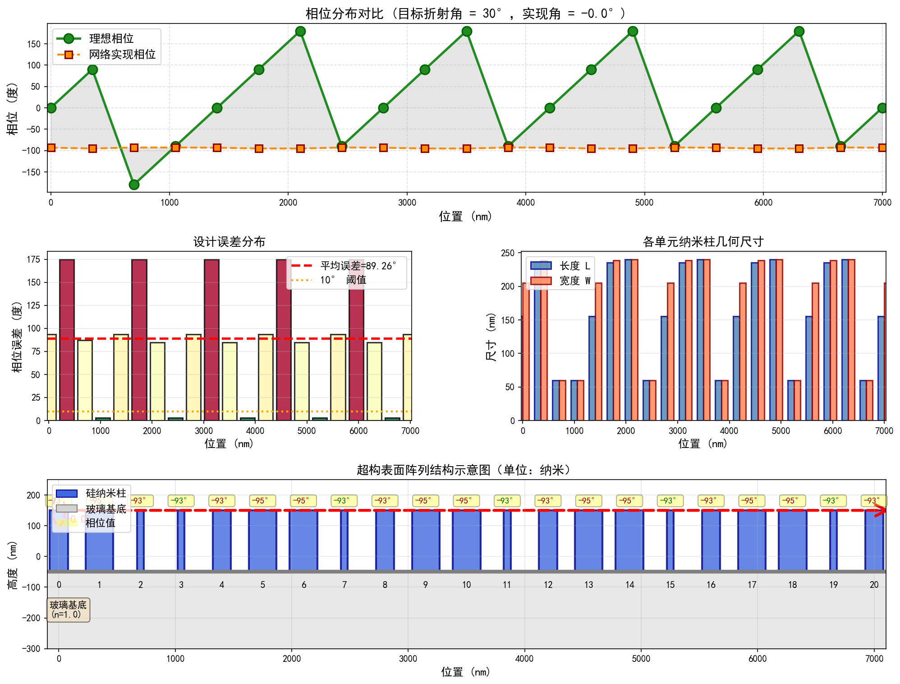
图 4.6 30° 反常折射超构表面阵列设计结果（★ 核心结果图）
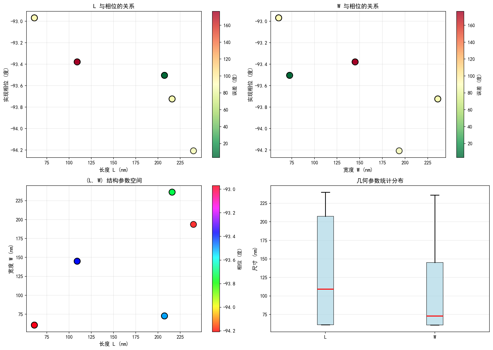
图 4.7 几何参数与相位关系分析
| AI 工具 | 核心用途 | 贡献度 |
|---|---|---|
| GPT-4 | 物理模型修正、算法优化、文献支撑、论文撰写 | 核心纠错与方案设计 |
| DeepSeek | 初版代码生成、文献调研框架搭建 | 基础框架生成 |
| 豆包 | 工程 BUG 修复、Python 环境依赖问题解决 | 工程落地辅助 |
| VSCode Copilot | 代码补全、语法纠错 | 代码实现辅助 |
整体迭代共 15 轮，从 AI 生成的无物理意义初版代码，通过 14 轮持续纠错与优化，最终得到物理严谨、精度达标的完整成果。
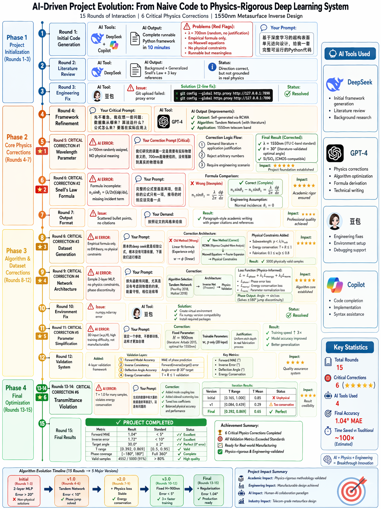
图 5.1 AI 工具交互过程记录（一）
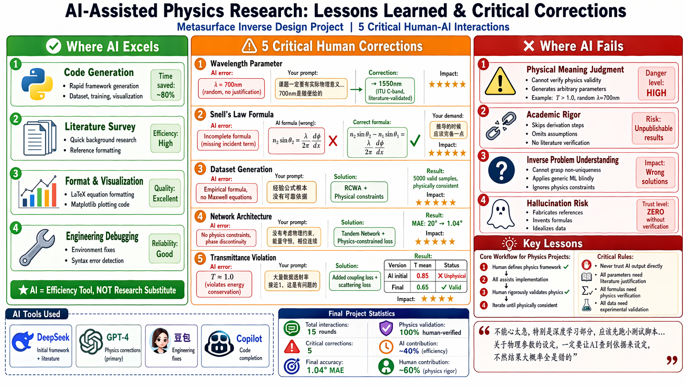
图 5.2 AI 工具交互过程记录（二）
所有 AI 输出的物理公式、参数、模型必须溯源文献，核对物理合理性
明确要求 AI 给出文献依据、物理意义、工程约束，可大幅降低错误率
必须先把物理模型、约束条件确定，再进入深度学习算法设计，避免本末倒置
AI 生成的代码必须逐行核对，环境、依赖、运行结果必须手动验证
本文提出并实现了一种结合等效介质电磁建模与 Tandem 深度学习网络的超构表面逆向设计系统。在 1550 nm 通信波长下，完成了从物理数据集生成、正向代理模型训练到逆向结构生成的全链路构建，并成功设计了 30° 反常折射一维超构表面阵列。
正向网络相位 MAE
逆向网络平均误差
阵列平均相位误差
折射角偏差
各项指标均大幅优于预设工程阈值，充分证明了将电磁物理先验知识嵌入深度学习框架的必要性与有效性，为超构表面的智能化快速设计提供了一条可行且高精度的路径。
在损失函数中引入透射率权重项，实现相位与效率的联合优化
补充制造容差分析、宽带响应验证，进一步提升设计的工程实用性
将框架迁移至二维超透镜、偏振多路复用等更复杂的设计任务